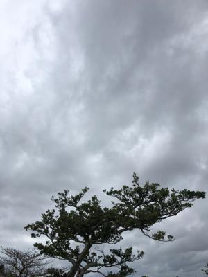
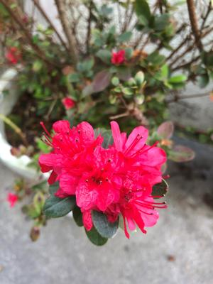

うるがいの話 ある日
最新: サンチキ【うるがいの話 ある日】とは 一日だけのプログです
『うるがいの話』の最新一日だけのプログで、通信料が少なく経済的だ。カニの画像をクリックすると全ての日付が載る『うるがいの話』サイトを表示します
|
|
【うるがいの話】 うるがい(ｳﾙｶﾞｲ urugai)とは、『もずくがに』の名前でとても大きくなります。 |
|---|---|
|
|
【カミマヤーの話】 猫のことを方言でマヤーといいます。カミマヤー（kamimayaa）とは、神の猫のことです。 |
|
【たながぁの音楽】 たながぁ（ﾀﾅｶﾞｰtanagaa）とは手長えびのことで、何種類かあり大きいのは車 エビぐらいになります。 |

|
【ぶながぁの話】 ぶながー(bunagaa)とは、赤い髪の毛、赤い身体、そして身長は１ｍ２０ｃｍ ぐらい、川の蟹を食べているの目撃された。場所は沖縄県国頭郡大宜味村のと ある村僕の隣近所に住んでいる爺さんから、聞いた話です。 |
|
|
【ギーマの話】 ギーマ(giima)とは、山原の里山に咲くスズランに似た、 花を付けます。実は食べられます、 気が付くと口の周りが紫になっています。 |
2022年03月20日 (日）サンチキ
14:59

私の田舎では、金縛りのことを方言で『サンチキ』という。
なぜ記憶が消えるのか - 神経病理学者が見た不思議な世界 -
ハロルド・L．クローアンズ - より引用
訳者あとがき 三の法則
それは、ある晩の一本の電話に始まった。
推定時刻、午後十一時五十八分。いつもと、とくに変ったことのない夜だった
。わたしは、ワープロとの、もう九時間にもおよぶデートにあきあきし始め、
キーボーかわりに、ビリビリ痛む肩を叩きながら、 「そろそろ、デートの相
手も考えたいよね......」とつぶやいたりしていたが、返ってくるのはワープ
ロの「ウィーン」という唸り声だけで、ひどく空しい思いをしていた。
いつもと、なにも変わらない夜だった。時計の針が(ここには、デジタル時計し
かないので、ごく修辞的な意味)十二時を回ったときだった。夜の静寂を破って
、目の前の電話が、ふいに鳴った。「はい、もしもし!」わたしは、ともかくも
、人生の単調さが打ち破られたことに喜びを感じ、受話器をひったくった。
電話の主は、「おれ」というひとで(本人がそう名乗るのだから間違いはない)
、なんだか知らないが、はなから「困った困った」を連発している。そこで、
わたしは親切にも、なぜ困っているのかと、きいてしまった。それが、悪夢の
発端だった！実は、この「おれ」氏というのは、悪くいえば女好きよくいえば
プレイボーイ(よくなっていないか)なのだが、つい最近、とても若いガールフ
レンドができたのだそうだ。なら、なにが困っているのかというと、なんと、
その日のデートで開口一番、「最近、金縛り、あってます？」ときかれたとい
う。「金縛りというのを知っていますか？」でもなければ、「あなたは金縛り
にあった経験がありますか？」でもない。そのような選択肢はいっさい与えら
れなかった。それは、「最近、なにか映画を見ましたか？」というのと、まっ
たく変わらぬ口調だったという。それで、ほとほと対処に困っているらしい。
でも、わたしはあまり同情してあげなかった。だいたい、若い若いというけれ
ど、いったいその子はいくつなのか？「十七」わたしは、その答に鼻白む思い
がし、さっさと電話をきった。だが、それは、ほんの序幕にすぎなかったので
ある。
次の日、ある私鉄線に乗っていると、ある駅で女子中学生らしき五人組が乗
り込んできた。彼女たちの賑やかなおしゃべりをなんとなくきいているうちに
、わたしの耳に「金縛り」の一語が飛び込んできた。わたしはぎょっとして、
思わず耳をそばだてた。
A「ねえ、このどろどんな金縛りにあう？」
B「わたしなんかね、まず、身体が動かなくなるの、で、遠くからトナカイの
鈴の音がきこえてくるんだ。シャン、シャン、シャン......」
C「このまえなんかね、身体のうえにおじいさんが乗ってくるんだよ。目なん
か閉じても、無理矢理、開けられちゃうんだー」
D「そう、そう。もう毎晩だから、怖くて眠れないよねー」
E「ねー」
すごい。驚いた。今度は「どんな金縛りにあうか」だ。「金縛りにあってます
？」の反復性を超え、これはもう、完全に日常性を前提とする質問である。彼
女たちにとって、このオカルト現象は、テレビのように日常に溶け込んでいる
ものなのか？わたしは、この霊媒師のごとき集団が、次の駅で降りていくのを
見送りながら、文字どおり金縛りになりそうだった。
三度めは、その日の夕方やってきた。新聞をつらつら眺めていると、わたし
の目に、「金縛り」の一語が飛び込んできた。わたしは、魔法でもかけられた
みたいに、その記事に見入った。それは、ある中学校保健室からの連載レポー
トで、なんでも「十代の子供に金縛りが増えている」というではないか！とい
っても例のオカルト現象ではなく、一種の神経症だと、記事は説明していた。
本書の５章をお読みの方は、もう察しがついたと思うが、どうやら彼女たちの
いっていた「金縛り」とは、「入眠時幻覚」に伴う「睡眠麻痺」のことらしい。
わたしは、それがふつうの人間に起こる正常な障害だと知って、一瞬、ホッと
した。しかし、そんなものが毎晩起こるとは、彼女たち(彼たち)は、いったい
どんな不規則な睡眠パターンをもち、どんなストレスを抱え込み、どんな重圧
的な生活を強いられているんだろう？そう思うと、やっぱり恐ろしいではない
か。よけいに恐しい。
このシンクロニシティ的体験からまもなくして、渡されたのが、この本の原書
Toscanini's Fumble (Contemporary Books, Inc.)だった。まだ「金縛り体験」
の余韻さめやらぬところへ、睡眠麻痺の章を読んだわたしは、おおげさにいえ
ば、運命に取り込まれるとでもいうのか、担当編集者氏の「翻訳するとなると
、けっこうたいへんだよ」という言葉を振りきって、「やります、やらせてく
ださい」といってしまった。本当の悪夢は、それからだったようだ......。
私も中学校のころ、毎日金縛りにあっていた。最初は、苦しくて嫌だったが、
そのうち快感になっていた。訳者のあとがきが面白かったので、要約するのも
面倒くさかいので長文を引用してしまう。

１４時４７分 ビットコインの総資産 ￥１４、４２１↑